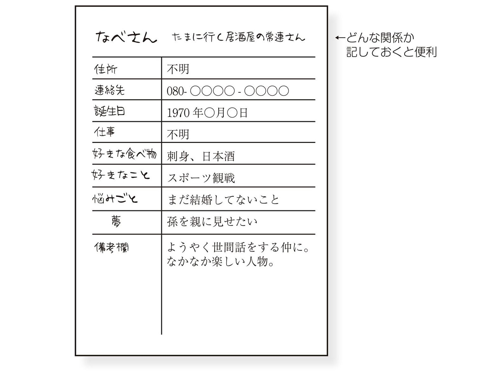
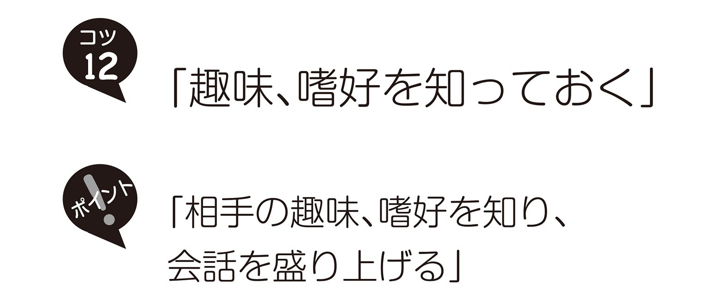
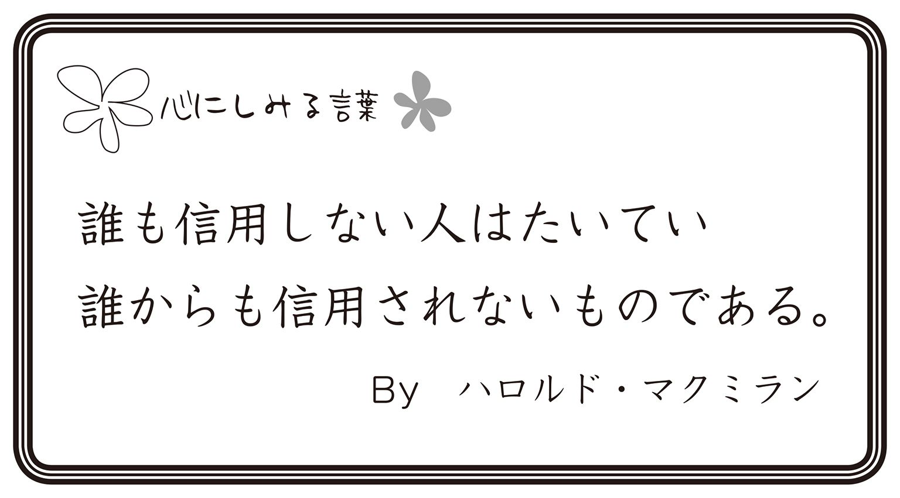
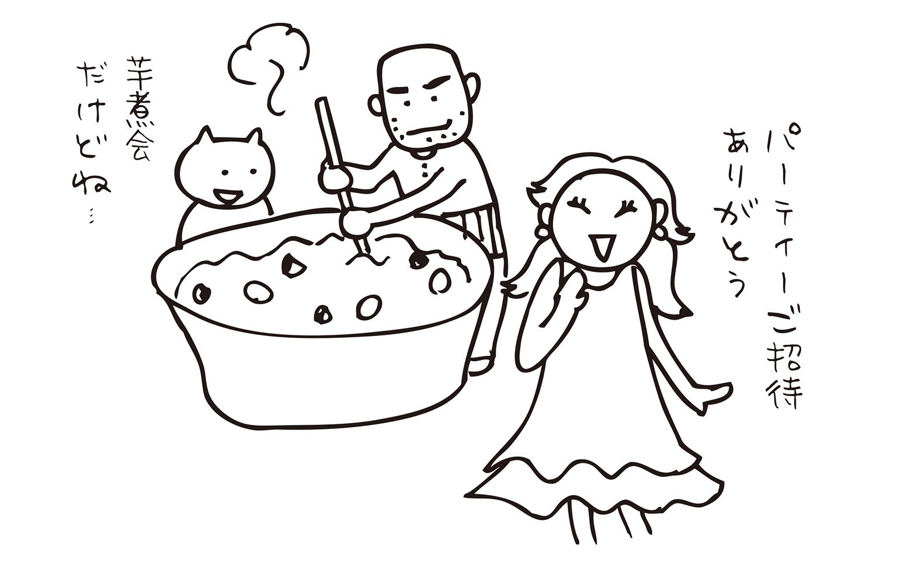
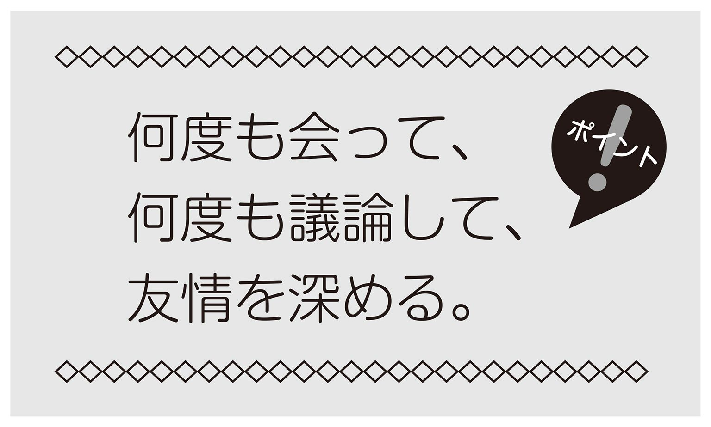

| 10人の友だちができる本：お付き合い編 | |
| 高橋フミアキ | |
| (2014) | |
＊この電子書籍は、横組みの底本を元に作成しました。
＊電子化にあたり、機能上の制約その他の理由により印刷版（冊子体）と異なる表記・表示をした箇所があります。
JASRAC許諾第901587700Y43130号
まずは10人の名簿をつくってみよう！
友だちづくりのスタートは名簿をつくることです。頭で思っているだけでは何の変化もありませんが、名簿に名前を書くという行為が大きな変化をもたらしてくれます。その人のことを思って行動した第一歩だからです。名簿を書くことで、あなたの人生にどのような変化が訪れるか、ワクワクしませんか？
素晴らしい友だちがあなたの周りにできるのです。毎日が楽しくて、楽しくて、喜びに満ちあふれた毎日がやってきます。朝は近所の花屋さんと笑顔でおしゃべり、昼はランチを食べながら友人を勇気づけて一緒に立ち上がります。夜は友だちから感謝のメールがやってきて一緒に涙するのです。真の友人にかこまれた人生がどんなに素晴らしいことか、あなたも味わってみたいと思いませんか？
まず、あなたの周囲の人たちの顔を思い浮かべてみてください。次の６つの分野で思い出してみましょう。結婚式に誰を呼ぼうかなとか、今日一日誰と会ったかなとか、そんなふうに考えていくと50人や100人くらいは、すぐに思いつくでしょう。
１）仕事関係
２）趣味関係
３）近隣関係
４）親戚関係
５）学校の同窓生
６）子どもや家族とのつながり
一度食事をしたことのあるお得意先の営業担当者とか、趣味の山登りで知り合った笑顔の素敵な女性とか、近所の花屋さんでいつもお花の話をする人とか、何年も会っていない従姉妹とか、中学校時代の同窓生とか、おばあちゃんの友だちのお孫さんとか、親しい人も、あまり親しくない人も関係なく、すべての人を思い出してみてください。
そのなかから10人を選びます。顔を思い出すだけで嫌な気持ちになる人もいれば、ワクワクした気持ちになる人もいると思います。嫌な気持ちになる人と無理に友だちになることはありません。まずはワクワクする人と友だちになっていきましょう。
ワクワクした気持ちになる人、あるいは「あの人ともっと親しくなりたいな」と思える人の名前を10人、ノートに書いてみてください。１ページに１人です。病院のカルテをイメージしていただけるといいかもしれません。
そして、次の項目を書いていきます。わかる範囲でかまいません。名前も「みっちゃん」とか「なべさん」とか、愛称しかわからなければその愛称を記入しておいてください。（次の図参照）

１）名前
２）住所
３）連絡先
４）誕生日
５）仕事
６）趣味
７）好きな食べ物
８）好きなこと
９）悩みごと
10）夢
11）備考欄（備考欄は広くとっておいてください）
いまは空欄でいいのです。焦らず、時間をかけて空欄を埋めていきます。立ち話をしたときとか、電話で話したとき、メールを送ったとき、タイミングをみながら相手の情報を集めていきます。
まだ信頼関係を築いていないときに、いきなり「住所を教えてください」と言っても断られる可能性があります。そんなときは「年賀状を送りたいんですけど住所を教えてください」というふうに聞きだし方を工夫してください。
あなたは、名簿をつくることでその人に関心を持ちはじめます。その人のことを考えるようになります。そして、その人のために行動するようになり、友情が少しずつ建設されていくのです。ガンジーが「よいことはかたつむりの速度で動く」と言っています。焦らず、腐らず、友情を深めていきましょう。
友だちをつくることが私の生きる目的です
友情が崩れるのは一瞬です。何気ないひとことで崩れることもあれば、理由もわからずいきなり絶交されることもあります。それは一瞬の出来事です。
一方、友情を築くのは長い年月が必要になります。投げ出したくなるときもあるでしょうし、怠けたくなるときもあるでしょう。そんな弱い自分を叱咤し友だちのために尽くすことで友情は築かれていきます。
私が友情を意識するようになったのは、離婚した妻が他界したときです。一緒に生活していたときは喧嘩ばかりでお互いに憎しみ合っていました。思いやりのかけらもない、冷淡な態度を取り続け、気に入らないことがあると１カ月も２カ月も口をきかず、無視し続けるような夫婦でした。
離婚して７年がたったときです。仕事に行きづまった元妻が私のもとに相談に来たのですが、私は「いままでの罰があたったんだよ。自業自得だ。反省しなさい！」と冷たく突っぱねてしまいました。その３カ月後に元妻は孤独死したのです。
私は自分を責めました。なんてむごいことをしたんだろう。もっと優しくしてあげればよかった。もっと親身になって話を聞いてあげればよかった。そんな後悔の念にさいなまれました。
それからです。人に優しくしよう、と思うようになったのは。相手がどんな人であっても冷淡な態度を取るのはやめよう。もっと、もっと人に尽くしていこう。そう思うようになったのです。
そして、コミュニケーションや心理学の勉強をたくさんやりましたし、人間関係に関するセミナーや研修にも多額のお金と時間を使いました。カウンセリングに関する書籍もたくさん読みました。
学んだことを実践し、友だちづくりをするようになって、いろんなものが好循環に動きはじめました。
私は長年ビジネスとして文章スクールを主宰しておりますが、受講生たちと一生お付き合いする友だちになろうと考えるようになったのです。現在、ホームパーティーに招待したり、忘年会や食事会など受講生たちと友情を深めています。
すると心の充足感が得られたのです。なんともいえない幸福感を持つようになり、私自身の平和で安定した心が周囲の人たちの心にも広がっていきました。友だちと一緒にいると最高に楽しく、最高の気分を味わうことができます。それはお金では買えない最高の幸福感でした。
そのとき思ったのです。もしかするとビジネスの目的はお金を儲けることだけじゃなくて、こうして真の友だちをつくることではないのかと。これはもうビジネスの範疇を超えています。私にとって、最高の友だちをつくることが、生きる目的になりました。
本書で公開している友だちづくりの方法は、営業や集客に活用できるとしてビジネス仲間が学びにやってきます。この方法は純粋に友情を深めていくためのものですが、ビジネスに活用していただいてもかまいません。ただ注意していただきたいのは、相手を騙してモノを売るためのものではないということです。心が大事になります。
人生はお金儲けが目的ではありません。最高の友だちをつくることが目的です。だから、ビジネスで成功するために友だちをつくるのではなく、ビジネスを通して友だちをつくっていくようにしていただきたいのです。
文章スクールや講演会、セミナーなどで、この方法をお話しすると、多くの人が「なるほど！ 人間関係で悩んでいたことが解決できそうです」とか「幸福な生き方が見えてきたような気がします」と言ってくださいます。本書を手にしたあなたの人生にも、そうした変化が起こることでしょう。
では、10人の友だちをつくる旅に行ってらっしゃい！
高橋フミアキ
CONTENTS〈目次〉
10人の友だちができる本お付き合い編
デザイン・イラスト 阿部照子（テルズオフィス）
さわやかなお付き合いをする第一のコツは「判断を差し挟まない」ということです。
人はつい正邪を決めたがります。相手の意見を聞いて「それは間違っている」とか「正しいよ」とか言ってしまうのです。「正しい」と言われたらだれも悪い気はしませんが、「間違っている」と言われたらムッとします。そこから人間関係がほころんでいくのです。
ですから、あなたの判断は捨ててしまいましょう。相手が自分の意見を言ったとき、それを「正しい」とも「間違っている」とも思わないでください。「ああ、この人はこういう意見を持っているんだな」と思って、それを名簿の備考欄に書き込んでいきます。
覚えてほしいこと
！！！問題点！！！
これは訓練が必要です。簡単にできることではありません。わかっていてもつい判断してしまうのが普通の人間です。何度も失敗しながら人間関係を築いていきましょう。
注意しなければいけないのはあなたの意見を求められたときです。「どうすればいいと思う？」と聞かれたとき「こうすればいいんじゃないかなあ」とつい答えてしまいます。その答えが相手の考えと合致していたらいいのですが、不一致の場合は相手を怒らせてしまう可能性があります。
◎ 解決策 ◎
質問には質問で返すことです。
「どうすればいいと思う？」と聞かれたら「もう少し詳しく教えてくれないかなあ？」と答えてみてください。相手がどんな局面に立たされているのかをもっと聞きだすのです。相手が話しだしたら「なるほど、そういう状況なんですね？」とひとつひとつ確認しながら進めて行きます。さらに「そこにどんな問題があるんだろう？」とか「そこで何を悩んでいるんだろう？」と相手の心を整理してあげることに専念してみてください。
挨拶をしない人がいます。私の住んでいるマンションでは、ほとんどの人が挨拶をしません。エレベーターを待っているとき、私が「こんにちは」と言っても無視です。不愉快な気分になり、こちらも無視してやろうという心が浮かんできます。
しかし、ここで考えてみてください。自分が挨拶しなかったら、周囲を不機嫌にさせるような人間になってしまいます。不機嫌は不機嫌を呼び、あなたの周囲が不機嫌だらけになってしまうではありませんか。魔性に負けてはいけません。
ある私立の小学校では毎朝校長先生が校門に立って、児童たちに声をかけているそうです。挨拶をしない子どもたちも自然とできるようになったといいます。無視されても、やはり、こちらから声をかけるということが大事です。
覚えてほしいこと
！！！問題点！！！
「こんにちは」と挨拶をしたあとの言葉が重要です。「少し痩せましたか？」とか「いつもお若いですね」と相手の外見について褒めたつもりでも、人によっては気分を害する方もおられます。また、初対面の人に「お仕事は何をされているんですか？」と職業を聞くのもやめておいたほうがいいでしょう。
◎ 解決策 ◎
お天気の話をするのが一番です。「寒くなりましたね」とか、「今年の夏は暑いですね」とか、「夕方から雨が降るそうですね」など、お天気の話は相手を不機嫌にしたりしません。
あるいは、自分のことを話してみてください。そのときのコツは決して自慢にならないようにすることです。むしろ、少しダメな部分を話してみるといいでしょう。「私って、おっちょこちょいだから、昨日、お財布忘れてスーパーのカゴにいっぱい入れちゃったの。もう、大変」という具合です。
私は人と会う瞬間、心のなかで「ありがとう」と言っています。とにかく、「ありがとう」と言うのです。おまじないのように「ありがとう」と。最初は意味もなく言ってもかまいません。繰り返しやっているうちに、心が必ずついてきますから。
相手が待ち合わせに遅れてきても、遠くで姿が見えてきたら「ありがとう」と声に出さずに心のなかで言ってみます。すると待ち合わせに遅れてきた相手を責める気持ちがスウッと消えていくのです。「そうだ。待つという素敵な時間を私にプレゼントしてくれたんだ。ありがたいな」と思えるようになります。
「ありがとう」はホントに不思議な言葉です。私は言葉を使う仕事をしていますので、人一倍言葉には敏感です。言葉の持つ力を敏感にキャッチします。とくにこの「ありがとう」という言葉は人を幸せにする力があると感じるのです。
あなたがもしもいま人間関係で悩んでいるのなら、ぜひ、心のなかで「ありがとう」と言ってみてください。
覚えてほしいこと
！！！問題点！！！
つい忘れてしまうことがあります。人間ですから。心のなかで「ありがとう」と言えば人との付き合い方がうまくいくのはわかっていても、そういう習慣がないとなかなかできないものです。
相手が嫌な人だと「ありがとう」とは逆のことを考えてしまうことでしょう。「面倒くさいなあ」とか「この人、イライラさせるなあ」とか。
あなたがそんなことを思いながら相手の話を聞いていると、その気持ちは、間違いなく顔に出ています。
◎ 解決策 ◎
すべてに「ありがとう」という習慣をつくりましょう。おススメは食事をするときです。「いただきます」と声に出して言ったあと、心のなかで「ありがとう」と言ってみるのです。１日３回、すべて「ありがとう」と心のなかで言います。
そうすれば、いつの間にか、心のなかで「ありがとう」と言うのが癖になっていきます。
笑顔は最高のプレゼントだと私は考えています。いつでも、どこでも、誰にでも、プレゼントできます。しかも、何度でもできるのです。10人に100回プレゼントしても、笑顔は０円です。いくらでもプレゼントできるのです。
あなたは、無表情で能面のような人と、笑顔の人と、どちらとお付き合いしたいですか？
もちろん、笑顔の人ですよね。より良いお付き合いをするには、笑顔をプレゼントできる人になることです。
ですから、いつでも笑顔を人にプレゼントできるように練習をしておきましょう。
歩きながらニコッと笑ってみるのです。青空を見てニコッ、子犬を見てニコッ、花を見てニコッ。鏡を見ながらニコッと、素敵な笑顔を自分にプレゼントしてみましょう！
覚えてほしいこと
！！！問題点！！！
「毎日が嫌なことだらけだ」と思っている人は、笑顔がつくれません。人の欠点ばかりが見えてしまう人も、なかなか笑顔がつくれないでしょう。
「笑ってみて」と言っても笑わないし、こちらがおもしろいダンスを踊って見せても、決して笑ってくれません。
あなたがもしも、そういう人だったら、自分の人間関係を見返してみてください。ご両親とはうまくいっていますか？ 夫婦関係や恋人とはうまくいっていますか？ 子どもとは、職場の人とは、うまくいっていますか？
◎ 解決策 ◎
まずは、心のなかで笑顔をつくってみましょう。ご両親に笑顔をプレゼントしている自分を想像するのです。想像の世界は自由です。
そこではあなたがご両親のセリフも想像してみましょう。たとえば「いままでごめんね」と父親が言っている姿を想像して、「いいのよ。こちらこそ素直になれなくてごめんなさい」と笑顔になっている自分を思い浮かべるのです。
想像の世界で遊ぶのは楽しいですよ。
対話には準備が必要です。準備もせずに人に会うと、思わぬトラブルを引き起こすことがありますし、何も得るものもなく終わることもあります。
準備といっても難しいことをする必要はありません。政府の要人に会いにいくわけではありませんし、ビジネスの話をするわけでもないのですから。
寝る前に翌日会う人の顔を思い浮かべるだけでいいのです。ベッドのなかで「ああ、あしたは、あの人に会えるんだ。楽しみだな」とニンマリ笑って眠ってみてください。眠っている間に脳がいろいろ考えてくれます。
楽しい出会いになるためにはどうすればいいかを。最後の「楽しみだな」と心のなかで言ってみることがコツです。ここを外さないでくださいね。楽しい出会いを想像しながら眠りにつくと、目が覚めたとき、心がワクワクしますから。
覚えてほしいこと
！！！問題点！！！
翌日、会う人があなたの苦手な人だった場合は要注意です。「会うのが楽しみだ」なんて思えないですよね。
無理矢理に思おうとすると胸が苦しくなりますし、忘れてしまおうとしても、絶対に忘れられません。苦しみがうしろから追いかけてきます。
そんなときは、どうすればいいのでしょうか？
◎ 解決策 ◎
苦手な人を思い浮かべて「ありがとう」と心のなかで言ってみましょう。つまり、心のなかで「ありがとう」と言う予行練習を前日の夜にやっておくのです。これが苦手な人と会う前にやっておく準備です。
人間の精神の成長はどうやってもたらされるかを考えてみましょう。筋肉に負荷がかかることで筋肉が強くなるのと同様に、精神も負荷をかけることで強くなります。苦手な人はあなたの精神に負荷をかけてくれるバーベルのような存在です。
あなたを成長させるために、あえて嫌われるような役を演じてくれているのですから、これは感謝しなければいけませんよね。
意見の違いを乗り越えて仲良くするのが友人
ガンジーはインド独立の父として「無抵抗非暴力主義」「菜食主義」「禁欲主義」を唱えてイギリス植民地支配と戦いました。タゴールはアジア人初のノーベル賞受賞者で翌年イギリス政府よりナイトの称号を授与されている偉大なる詩人であり思想家です。
この二人はインドの独立という共通の目的をもっていました。タゴールはガンジーのインド独立運動を支持し、ガンジーに「マハトマ＝偉大なる魂」の称号を贈ったとされています。この二人の親交はガンジーがタゴールの始めた学園（後のタゴール国際大学）を訪れたころから始まります。タゴールは人間的にはガンジーを尊敬し独立運動も支持します。
ところが、この二人は考え方がまったく違っていました。タゴールは、ガンジーが進めた「イギリス製織物の焼き払い運動」に反対し「特別製（イギリス製品の意味）の衣類を着るか、着ないかの問題は、主として経済学に属する。（中略）ガンジーの命令に盲従して、衣類を焼くような蛮行はやめて、貧しい人たちに着せればいいではないか」と批判したのです。
ガンジーが目指した理想は「協同組合的社会」で、貧しい村落が自給自足的に成り立つ制度でした。インドに古くから伝わるチャルカーとカーディ（手織り綿布）を復活させる運動（チャルカー運動）をガンジーが推進していたときにも、タゴールは「地方気質の最悪の形式」と批判しています。
そんなタゴールのことをガンジーは決して攻撃することはありませんでした。それどころか、タゴールが学園経営に失敗したときに支援者を探し出し多額の出資を取り付けています。意見が違っても二人は決して喧嘩することなく、変わらぬ友情を育んでいったのです。もしも、この二人が喧嘩別れをしていたら、現在のインドの発展とタゴール大学という世界的な大学が残っていたでしょうか。仲良くすることが発展のカギです。私たちも、友人と小さな意見の違いはありますが同じ方向に向かって仲良くしていきましょう。
結論のない話を聞くのは正直言って苦痛ですよね。とりとめのない話が延々と続き、揚げ句の果てはまた振り出しに戻って同じ話になるのです。
愚痴や不満の場合、そうなるケースが多いようです。
あなたはそんなときどうしますか？ つまらない話だからといってよそ見をしたり、「結論は何なの？」と迫ったりすると相手は機嫌を悪くしてしまいます。もしかすると喧嘩になるかもしれません。
そんなときどうすればいいのでしょうか？
話に結論などなくていいんです。決して結論を求めないでください。結論を求めるのは、あなたが自分を中心に考えている証拠です。相手を中心に考えてみましょう。そして、相手が喜ぶことを言ってあげるのです。
覚えてほしいこと
！！！問題点！！！
愚痴や不満の多い人が喜ぶ言葉って何でしょう？
「主人が最近冷たいの。どうすればいい？」と質問されてその解決策を言うと、「私にはできない」とか「でも...」とか言って相手は煮え切らない態度を取ります。それでもあなたが解決策を相手に押し付けてしまうと、相手は「ムカつく！」と言って怒りだすかもしれません。
◎ 解決策 ◎
そのときの感情を引き出すことです。そして、その感情に寄り添うようなお話をしてみてください。たとえば「ご主人はどんなふうに冷たくするの？」と質問してみましょう。
すると相手が答えます。そのときあなたは「冷たくされたら、どんな気持ちがしましたか？」と聞いてみてください。「悲しかった」「寂しかった」「つらかった」という答えが出て来るでしょう。「悲しかったんですね。そんなときは私に電話してちょうだい。友だちじゃないの」と声をかけてあげてください。
相手が悲しいとき、寂しいとき、つらいとき、そんなときこそそばに寄り添うのが友だちです。

相手の意見を否定しないことです。とくに年下の人が言った意見は絶対に否定しないでください。
否定されると、人は誰でもそれ以上モノを言いたくなくなるからです。そうなると会話が成立しないばかりか、あなたはいつの間にか相手にとって嫌な人になってしまいます。嫌な人になってしまったら友だちをつくるどころではありません。
相手の意見だけでなく、相手の好みや人間性を否定する人がいます。
たとえば、相手が赤い洋服を着てきたとき「赤はダメよ。あなたには青が似合うの」と否定したり、相手がファミレスに入ろうとしたら「ファミレスは落ち着かないから嫌よ」と否定したりするのです。言われた人は、少しイラッとしますよね。
相手をイラッとさせるのではなく、安心するような言葉をプレゼントしてあげてください。たとえば、「素敵な赤ね。よく似合ってるわよ」と言ってあげるのです。
覚えてほしいこと
！！！問題点！！！
究極ですが、相手の意見が「死にたい」ということだったらどうすればいいのでしょうか。自殺はいけないことだというのは当たり前です。真っ向から否定しなくてはいけません。
しかし、「死にたいなんて言うんじゃない」と、相手の意見を否定して、正論を押しつけてしまうのは逆効果だとカウンセリングの専門家たちは言っています。
◎ 解決策 ◎
「死にたい」という相手の意見をまずは否定せず、心情を打ち明ける相手としてあなたが選ばれたということを受け止めましょう。
相手を責めるのも、叱咤するのも危険です。話をはぐらかすのもかえって相手の心情を逆なでします。一般常識や正論を押しつけるのは暴力です。「自殺を考えるほどつらいんですね」「苦しい思いをしているんですね」と言った言葉をかけて相手の気持ちに寄り添うことです。
まずは安心させ、喜ばせ、そののちに生きる方向へ導いていきます。つまり、根気よく付き合っていくことです。

友だちと議論して勝ったとして何の得があるでしょうか。あるとしたら、あなたの心のなかの優越感が満足するだけです。議論に勝つと、自分のほうが相手よりも賢いぞ、自分のほうが上だぞという気持ちが大きくなって傲慢になっていきます。
そんなあなたを相手は憎らしく思うでしょう。
根深い人なら何年もそのときの悔しさを覚えているかもしれません。恨みを込めてあなたを見る人もいるでしょう。議論に勝ったところで何の得にもならないのです。
悪人は徹底的に攻撃しなければいけませんが、友だちを攻撃するのはよくありません。「あなたは間違っている。私が正しい」という態度は友だちを無くしてしまいます。友だちを正しい方向へ導くのは、時間をかけて根気よく取り組む必要があるのです。
ですから、議論で勝つことよりも、仲良くすることに価値をおいてください。焦って正邪を決める必要はないではないですか。まずは仲良くしてください。
覚えてほしいこと
！！！問題点！！！
「議論に負けたくない」という人が、いるかもしれません。議論に負けるとバカにされるかもしれませんし、相手に支配されるかもしれないからです。
小さい頃、議論に負けたら腕にペチッと、シッペを受けたり、掃除当番をさせられたりしたものです。その感覚が残っているのでしょうか。議論や意見の食い違いが生じたときは、つい勝とうとしてムキになってしまいます。
「議論に負けたくない」という気持ちはどうやってコントロールすればいいのでしょうか。
◎ 解決策 ◎
「人生、生きているだけでOK！」と心のなかで言ってみましょう。そうすると、相手の意見も「すべてOK」と思えてきます。
実際そうです。どんな意見もすべて正しいのです。
「凄いですね」「なるほどね」「ありがとう」が私は口癖になっています。この３つは人間関係を円滑にする魔法の言葉です。
まず、「凄いですね」と褒めること。「さすが」とか「へえ」とか、「大したもんですね」など、褒め言葉のバリエーションをいくつか持っておくと友人との会話に便利です。
「なるほどね」と認めること。相手を認める言葉は、「おっしゃる通り」、「そうですね」、「賛成です」など、言い方はいろいろありますので、自分の一番言いやすい言葉を３種類ほど見つけておくといいでしょう。
「ありがとうございます」と感謝すること。「サンキュー」「感謝です」「ありがたいね」など、感謝の言葉は何かしてもらったらすぐに言うようにしています。
覚えてほしいこと
！！！問題点！！！
こうした言葉は相手に媚を売っているような印象を与えます。ですから、プライドの高い人は、なかなか言えないものです。
人に媚を売ったり、顔色をうかがって生きていくのは窮屈ですし、疲れますからね。
◎ 解決策 ◎
この３つの言葉は、人に媚を売るのとは、まったく違います。媚を売るとは、何の努力もしないで相手に取り入ろうとする行為のことです。褒めて、認めて、感謝することには、相手に取り入ろうという気持ちはないのですから、媚を売ることとは違います。
表面的には媚を売っているように見えるかもしれませんが、この３つの言葉は純粋に相手を喜ばせるための「言葉のプレゼント」なのです。
人の機嫌を取ったり人に尽くしたりすることは決して悪いことではありません。むしろ、積極的にするべきです。特に自己愛が育っていない人には、赤ん坊と接するように機嫌を取ってあげたり、お世話をしてあげたり、褒めて、認めて、感謝することが必要です。
「ブッダスマイル」というのは、私が勝手につけたネーミングです。目は涼やかに細め、口は閉じたまま、口角を少し持ち上げる笑い方のことです。この笑い方だと、笑うのが苦手な人も簡単にできますし、下品にならないという利点もあります。
さらに大きな利点があるのです。それは、相手が嫌なことを言い出したり、自慢話を始めたり、愚痴や不満を言い出したときも、ブッダスマイルで聞いていれば、すべて許せるということです。
ブッダスマイルを絶やさずにおしゃべりすれば、どんな話でも、イライラしないで聞くことができます。不思議なものです。これは実際にやってみるほうがわかりやすいでしょう。

覚えてほしいこと

！！！問題点！！！
相手が怒っているときは要注意です。ブッダスマイルを浮かべていると「何、ヘラヘラ笑ってるんだ！」と怒鳴られるかもしれません。怒鳴ってくれるのならいいのですが、何も言わずに友情が壊れてしまうのはもったいない話です。
◎ 解決策 ◎
深刻な話を相手がはじめたときは、ブッダスマイルを0.5くらいに抑えておきましょう。0.5ですから、笑っているのか、平常の顔なのかまったくわからない状態です。相手があなたに対してお説教をはじめたときとか、注意や忠告をしだしたときは、この0.5を意識してみてください。
言い換えると、心のなかでブッダスマイルをするということです。注意や忠告は耳に逆らいます。ともすると、ムカつくものです。しかし、ムカついてはいけません。相手を憎んでしまったら友情は築けないですから。心のなかでブッダスマイルをつくってみると、ムカつく相手でも不思議と許せるようになりますから、やってみてください。
最後まで信じ抜くのが友人
中国の春秋時代（紀元前8～5世紀）に斉の国で活躍した宰相に管仲がいます。古い制度を改め、物価を安定させ、産業を興隆し、民衆の生活を安定させました。管仲のおかげで斉の国は力を増し、時代の覇者となります。
そんな管仲ですが、若い頃はまったくふるいません。商売をしても損失を出してばかり、何度も宮仕えをしてはクビになり、戦をしては逃げ帰ったりと、まったくいいところなしの男でした。周囲はこんなダメな男など誰も相手にしません。
ところが、親友の鮑叔だけは違います。商売で大損失を出しても鮑叔は管仲を責めたりはしません。また、商売で利益が出たときに管仲のほうが多く分け前を取ったにもかかわらず鮑叔はそれを許します。宮仕えをクビになったときも無能呼ばわりなどせず、戦から逃げ帰ったときも決して臆病者と罵ったりはしませんでした。
その友情は管仲が罪人になったときも変わりません。管仲と鮑叔は斉の国の後継者争いに巻き込まれて敵同士となってします。結果は、鮑叔が仕える王子が即位し、管仲が仕える王子は国外へ逃れ、その後、王子は斬首になり、管仲は罪人となって帰ってきます。そのとき、鮑叔は管仲を助けるのです。君主に「天下の覇者を望むならば、管仲を宰相として得なければいけません」と進言し、自分は管仲の下の立場に入ります。
そのように、管仲と鮑叔の友誼は一生変わりませんでした。二人の友情を後世の人々が称えて「管鮑の交わり」と呼んだのです。
何かチョッとしたことで友情は壊れてしまいます。「もう絶交だ！」といって縁を切ってしまったり、気が合わないというだけで疎遠になったりする例が少なくありません。ましてや、友人が罪人となってしまったら一切の関係を絶ちたくなるのが人情です。しかし、鮑叔のように、損得や立場によって関係を変えるのではなく、信頼し続けられるような友人関係を築きたいものです。
管仲は晩年にこう語っています。「私を生んだのは父母だが、父母以上に私を理解してくれたのは鮑叔である」
職場の仲間とか、近隣のお知り合いなど、毎日会う人がいると思います。あなたは、そんないつも会う人とどんな会話をしていますか？
一番無難なのが天気の話題です。「今日は、良い天気ですね」とか「あいにくの雨で洗濯物が乾きませんね」など、天気の話はすべての人が関心がありますし、相手を傷つけることもありません。しかし、問題があります。
それはそれ以上の深い友情を築けないということです。最初は天気の話をする間柄を続けて、信頼関係を築いていきます。ある程度、関係ができてしまったら、少しだけ踏み込んだ話をするようにするといいでしょう。
そこでおススメなのが家族の話題です。息子さんや娘さんが受験生だったら、チョコレート（キットカット／きっと勝つ、ポッキー／吉報）や五角鉛筆（合格鉛筆）などの合格グッズをプレゼントすることができます。病気のおばあちゃんがいたら、近くの病院の情報や関連本をプレゼントすることができるのです。
そうやって家族ぐるみでお付き合いすると、友情がどんどん深くなっていきます。
覚えてほしいこと
！！！問題点！！！
まだ親しくなっていないのに、いきなり家族のことを尋ねるのは失礼にあたるケースがあります。もしかすると相手は家族のことに触れられたくないと思っているかもしれません。その点は、繊細な心配りが必要です。
◎ 解決策 ◎
最初に自分の家族のことを話しましょう。まずは自分から自己開示することです。
あなたが心を開かなければ相手も開いてくれません。自分のことはちっとも話さず、相手のことを根ほり葉ほり質問する人がいますが、これはデリカシーがないと言われてもしかたありません。
まずは、別れ際に「お母さんにもよろしくお伝えください」とか「お父さんはお元気ですか」といった挨拶程度に家族のことを話題にするのがいいでしょう。
人に関心を持ちましょう。関心とは注意を向けることです。その人に興味を持つことです。あの人はどんな花が好きなんだろう。あの人はどんな食べ物が好きなんだろう。どんなことで悩んでいるんだろう。休日はどんな遊びをしているんだろう。そんなふうに相手に対して関心を持ってください。
無関心であってはいけません。
たしかに、誰とも関わらないで生きるほうが楽です。何もしなくていいんですから。しかし、人間はひとりで生きていける存在ではありません。誰かに支えられて生きているのです。ですから、今日から人に関心を持って生きてみませんか。
それに相手の趣味や嗜好を知っていれば会話もはずみます。相手が夢中になっている趣味の話をすると相手は目を輝かします。好きな食べ物の話をすると飛びついてくるはずです。そうやって会話を盛り上げていきましょう。
覚えてほしいこと

！！！問題点！！！
ストレートに質問しても答えてくれないことがあります。
たとえば「映画が好きです」と相手が言ったとしても「どんな映画が好きですか」と踏み込んで聞くと、なかなか出てこないものです。そうなると映画の話題は盛り上がりません。
◎ 解決策 ◎
質問を変えてみることです。「どんな映画が好きですか」と聞かれても相手は評論家でもなければ映画の関係者でもありませんから、答えようがありません。そもそも映画にどんなジャンルがあるのか、その言葉を知らないのですから。
そういうときは「月に何回くらい映画を見にいくのですか？」とか、「どこの映画館でいつも見ているんですか？」とか、「最近の映画館って変わりましたよね」というふうに角度を変えて質問してみてください。盛り上がりますよ。
隙あらば、応援する。この心がけで人とお付き合いすると楽しいですよ。応援されて嫌がる人はいませんから。
役者を目指している人がいたら、お芝居のチケットを買ってあげるとか、知り合いにプロの役者がいたら会わせてあげるとか、関連本をプレゼントするとか、考えつくかぎりの応援をしてみましょう。
単純に「応援してますからね」「やってほしいことがあったら、何でも言ってね」と声をかけてあげるだけでもいいと思います。
言葉を変えると人に尽くすということです。相手のためになることを何でもいいからやってみてください。
そうするとあなたはどんどん高みに成長します。役者を目指す友人のために尽くしていたら、いつの間にか演劇のことが詳しくなるでしょうし、チケットの取り方や劇団運営のことも知るようになるでしょう。
人と人を会わせることをやっていると、それだけ、あなたに知識と知恵が蓄積され、さらに人脈も広がります。それって素晴らしいことですよね。
覚えてほしいこと
！！！問題点！！！
応援を重たいと感じる人がいます。いわゆる「小さな親切、大きなお世話」というやつです。
おせっかいが過ぎると嫌われる可能性があります。嫌われてしまったら、あなたも気持ちが落ち込むでしょう。
せっかく相手のために一生懸命尽くしたのに、何の役にも立っていなかったという徒労感に襲われるかもしれません。
◎ 解決策 ◎
相手が一番喜ぶことは何かを見つけることです。親切の押し売りになっていないかどうか、考えてみましょう。行動する前に、しっかりと考えることです。一番喜ぶことは何かを。
考えて、考えて、相手を思う気持ちが心のバケツにいっぱいになって、あふれるくらい考えてみてください。考えても見つからなかったら、相手との会話のなかで見つけることです。
相手がどんな夢や目標を持っているのかを知っておくといいでしょう。夢や目標を持てない人が多いなか、それがあるだけでも凄いことです。そのことを褒めてあげてほしいのです。
どんな夢でもいいのです。褒めてあげてください。スポーツカーを買いたいとか、豪邸に住みたいとか、お金持ちと結婚したいとか、そういう夢を決して否定してはいけません。
あなたと考え方が違うからといって否定したり、考えを変えさせようとしないでください。否定されると誰でも夢を持つことをやめてしまうからです。せっかく持つことができた夢をすぐに消してしまったらもったいないじゃないですか。
褒めることは、種に水をやるようなものです。まだ小さな種ですが褒めて水をやることでどんどん育っていきます。育っていくうちに相手の夢も変わっていきますから、安心して見守ればいいのです。あなたがやるべきことは水をやることです。
覚えてほしいこと
！！！問題点！！！
夢を達成するためには修業が必要です。ミュージシャンになるには、人一倍歌の練習をしなければいけないでしょうし、豪邸を建てるにはガムシャラに働いてお金をためなければいけません。誰が考えてもそういう結論が出てきます。
それで、つい「こんなところで遊んでないで、歌の練習をしたらどうだ」とか、「死ぬ気で働かないとダメだぞ」などと言ってしまいます。
しかし、そんな言葉を使うと、相手は否定された気持ちになります。お説教に聞こえてしまい、あなたから遠ざかっていくでしょう。
◎ 解決策 ◎
ゴールを一緒に夢見ることです。「君が日本武道館をいっぱいにするミュージシャンになったら、凄いだろうね」とか、「豪邸に住んでいる君の姿が目に浮かぶようだよ。ホームパーティーを開いたらぜひ呼んでくれよ」というふうに、相手と同じ夢を見ると楽しく会話ができます。
相手が何を欲しがっているのかを日頃から調べておきましょう。それは、相手が話す言葉の底に隠れているかもしれませんし、ストレートに「前から欲しいと思っていたものがあるの」と教えてくれるかもしれません。
欲しがっているものがわかったら、すぐに名簿に書き込んでおきましょう。
手の届く範囲のものならば、お誕生日にプレゼントするこができます。誕生日プレゼントはやはり、一番相手が喜ぶものを贈るべきです。
必要のないものを贈ると、表向き感謝されても内心では迷惑がっていることがありますから。

覚えてほしいこと
！！！問題点！！！
手の届かない高額なものだった場合はどうすればいいのでしょうか？
車が欲しいとか、豪邸が欲しいとか、発展途上国に学校を建ててみたいとか、誕生日にプレゼントできるレベルではありません。だからといってあきらめないでください。とっておきの方法があります。
◎ 解決策 ◎
一緒にあなたも欲しがってみるのです。「あ、私も車が欲しい。寝泊まりができるようなキャンピングカー」とか、「ハワイに別荘が欲しいな。庭にはプールがあって、のんびり暮らしたいな」とか、「貧しい国に学校を建てるのっていいよね」というふうに、同じものを見つめるのです。そうすると最高の友情が築けますよ。
「欲しいもの」や、「やりたいこと」、というのは、人間のやる気スイッチになります。燃料と言ってもいいでしょう。そのスイッチを押して、燃料に火をつけるのです。一緒に同じものを欲しがり、同じものを見つめてみると、相手の炎は燃え上がります。
あなたは、友だちの燃料に火をつける人になってください。決して、やっとついた火を消すような人にはならないでください。
年齢に関係なく尊敬し合うのが友人
ゲーテは1749年生まれ、シラーは1759年生まれです。ゲーテの方が10歳年上です。しかし、この二人はお互いに尊敬し合い、励まし合って生きていきます。
ゲーテは25歳の時に『若きウェルテルの悩み』でブレイク。この作品はシュトゥルム・ウント・ドラング運動（18世紀後半にドイツで見られた革新的な文学運動）と連動し理性と形式を重んじるロココ的な文学から脱却して、理性に対する感情の優越、発露を表現しています。その後ワイマール公国政務官を務め、出世してワイマール公国の宰相となり、姓に貴族を表すフォンが付くようになります。
シラーは18歳で発表した戯曲『群盗』で世に出ていきますが、この後、祖国を出奔し、亡命して貧乏生活が始まるのです。シラーは友人たちの援助でなんとか食いつないでいきます。ゲーテはシラーの才能を認め、ワイマール公国のイェール大学の歴史学教授に招聘します。
自然科学研究にのめりこんでいたゲーテを諭して「あなたの本領は詩の世界にある」といってその興味を詩作へと向かわせたのはシラーでした。ゲーテはシラーからの叱咤激励を受けつつ、1796年に教養小説の傑作『ウィルヘルム・マイスターの修行時代』を、翌年には『ヘルマンとドロテーア』を完成させます。
1799年にはシラーがワイマールへ移住し、二人の交流はますます深まります。『ファウスト』の執筆をうながしたのもまたシラーです。ゲーテは後に「シラーと出会っていなかったら、『ファウスト』は完成していなかっただろう」と語っています。
1805年５月９日、46歳でシラーが没すると、ゲーテは数日間泣き続けたといいます。
想像してみてください。あなたよりも10歳年下の人と友情を築くことができますか？ 人はともすると年下の人を見下し、軽んじたりするものです。しかし、そんな付き合い方をしていると、友情は生まれません。ゲーテは年下のシラーに励まされ、影響を受けて偉大な芸術作品を完成させています。ゲーテとシラーのように、年齢に関係なく、尊敬し合える友人関係を築いていきたいものです。
悪い友だちは破滅を呼び、良い友だちは希望を生みます。悪い友を遠ざけ、良い友に近づくことです。
悪い友だちと付き合っていると、あなたまで悪く染まってしまいますし、あなたがいままで築き上げてきた良い友だちにも迷惑をかけてしまう恐れがあります。悪い友だちは腐ったみかんのように他のみかんまで腐らせてしまう元凶なのです。
ただし、人間は変わります。長い間、会わないうちにすっかり変わってしまったということがよくあるものです。以前は、生意気で人の意見などちっとも聞かなかった人が、久しぶりに会ってみると、謙虚で温厚な人柄に変わっていたということは私も経験があります。
しかも、悪友こそ、あなたがクリアしなければいけない課題を教えてくれる存在なのです。
ですから、悪い友だちとは、いったん「距離は置くけど縁は切らない」という付き合い方がベストだと思います。「縁を切らない」とは、たまにメールをするとか、年賀状を送るとか、そうした縁だけは続けるということです。
覚えてほしいこと
！！！問題点！！！
何をもって悪い友だちと判断するのかが問題です。これは、個人差がありますので一概には言えません。
人を見た目で判断するのは間違っていますし、見た目は良好でもお付き合いしているうちに悪影響を及ぼす人もいます。
◎ 解決策 ◎
人間には短所もあれば長所もあります。短所ばかり見ていると悪友に思えてきますし、長所を見れば善友になるものです。どんな友だちも、長所を見るようにしたいものですが、なかなかそれができないケースが少なくありません。
あなた自身がその友だちと一緒にいてストレスを感じるようであれば、少し距離を置くといいでしょう。しかし、その人にも必ず長所があります。ですからメールや年賀状のお付き合いを続け、半年に１回くらい会ってお話しするのもいいかもしれません。考え方の違う悪友ほど得るものが多いからです。
会話中に感情的になることがあります。激高して大きな声を出してしまったり、イライラしてしまったり、意見の違う人とお話しするのはトラブルがつきものです。そんなふうに感情的になったら、いったん席を外しましょう。
「ちょっと、トイレへ行ってきます」と言って席を立ってください。
トイレへ行き、鏡を見ながら深呼吸するのです。顔を洗ってもいいでしょう。感情が収まり、冷静になるまでトイレで時間を過ごしてみてください。
大事なのは、自分の意見を押し通そうとしないことです。意見の違いはいいことなんですから。あなたは自分の意見が正しいと思っているかもしれませんが、相手は違った意見を持っています。それが普通です。
自分と違う意見に耳を傾けてください。そうすれば、あなたの意見はより高次なものへと発展します。どんな意見にも必ず欠点はあるものです。その欠点を相手は指摘してくれたのだと思ってください。指摘された箇所を改善すればあなたの意見は一段高くなれるのです。
覚えてほしいこと
！！！問題点！！！
感情的になるのは意見の違いだけではありません。たとえば、あなたが尊敬する人をバカにされたり、あなたのことを侮辱されたりしたら、いかがでしょうか。誰だって感情的になると思います。
そんなときはどうすればいいのでしょうか。

◎ 解決策 ◎
感情的に話したら逆効果です。ますます相手はあなたの尊敬する人をバカにするでしょうし、あなたのことを侮辱するでしょう。感情的に話していいことなど、何もないのです。
やはり、ここはいったん席を外して、冷静になりましょう。気持ちが落ち着いたら席に戻り、理路整然と「人をバカにしたり、侮辱したりするのはやめてください」とお願いするべきです。
そして「距離は置くけど縁は切らない」というお付き合いをしましょう。
愚痴や不満を延々と話す人がいます。夫に対する愚痴や、仕事に対する不満などを、グジュグジュと喋り続け「どうすればいい？」と、相手は質問してきます。あなたが解決策を話すと「それは無理よ」とあなたの意見を否定するのです。
そんなふうに、愚痴や不満を延々と聞かされるとイライラします。早く終わってくれないかなと思いながら聞いていると、ついよそ見をしてしまい、「ちょっと、私の話、聞いてるの？」と相手は怒りだすのです。
相手はあなたから意見や助言を求めているのではありません。ただ聞いてほしいだけなのです。ですから、よそ見をせず、真剣に聞いてあげることです。
「あなたの話をちゃんと聞いてますよ」という意味で、メモを取りながら聞くといいでしょう。
そして書き取ったメモを相手に見せながら「つまり、こういうことで悩んでいるのね？」と、ときどき整理してあげてください。
覚えてほしいこと
！！！問題点！！！
メモ帳を持っていないときはどうすればいいのでしょうか。
コーヒーショップやレストランなどでお話しするときはメモ帳を出すことができますが、街角で立ち話をしているときは、できません。
メモ帳がないと、ついよそ見をしたり、真剣味に欠ける態度をとってしまうことがありますので、注意してください。
◎ 解決策 ◎
ときどき相手の話を整理してみてください。「私が聞き間違えているかもしれないので、話をここで整理させてね」と言っておいて「それで、その人はあなたにこんなことを言ったのね」「そのとき、こんなことをされたんだ」というふうに話を整理します。
愚痴や不満は、相手が悩んでいることです。あなたに悩みを話すということは凄いことだと思いませんか？ 悩みを打ち明ける相手として、あなたを選んだのです。
そのときは、決して相手を注意したり、否定したりするようなことを言わないでください。大事なことは、あなたが相手にとって愚痴を言える友人になることです。
断り方に人間性が出ます。強引に飲み会に誘ったり、モノを売るためのイベントに誘ってきたりする友人がいますが、そんなときにどうやって断りますか。「今日は忙しいんだ。飲み会なんか行ってられるかよ」と突っぱねるか、「どんなに良いモノでも、嫌なモノは嫌なんだよ」と断固とした態度をとるかですよね。
しかし、どちらも角が立ちます。角を立てないで断るのが、さわやかな大人の付き合い方です。コツは最初に感謝の言葉をつけて、最後にフォローすることです。
たとえば、モノを売りつけられたら「そんな良いモノを私に紹介してくれてありがとう」と感謝します。そのあとに断るのです。「でも、いまは間に合っているので、購入することはできません」
さらに、「また、ほかにも素敵な情報があったら教えてくださいね」とフォローをすると完璧です。
覚えてほしいこと
！！！問題点！！！
何でもかんでも誘いを断っていいのか、という問題があります。嫌だなと思ったことでも、それがあなたを成長させるかもしれないのです。
断るか、断らないかを、気分次第で決めないほうがいいかもしれません。
◎ 解決策 ◎
とくに目上の人の誘いには乗ったほうがいいでしょう。あなたが普段いる世界とは、まったく違う世界が開けてくることがあるからです。違う世界の人と知り合い、深い仲になるかもしれません。
たしかに違う世界へ入ることは勇気のいることです。怖いし、不安だし、失敗することもあるでしょう。
しかし、失敗を恐れて、いつもと同じ世界にとどまっていたら、あなたの成長は止まってしまいます。新しい世界へ飛び込んで、どんどんチャレンジすることです。
借金だけはやめてください。貸すのも、借りるのもダメです。友情を一瞬で壊してしまうからです。
しかし、友だちが「お金を貸してほしい」と言ってきたら、なかなか断り切れるものではありません。そんなとき、どうやって言えばいいのでしょうか。
私も昔は友人にお金を貸していました。10万円とか、50万円とか、言われるままに貸していましたが、その友人は二度と私の前に現れません。悲しいことに私はお金を貸すことで友だちを失ったのです。
友だちを失わない方法があります。それは、「お金を貸してほしい」と言ってきたとき、そのときの持ち合わせで、許容範囲内のお金を、あげることです。「ごめんね。今日はこれだけしかないので、よかったら使って」と言って、私は１万円くらい渡すようにしています。もちろん、あげたものですから返済を催促しません。
覚えてほしいこと
！！！問題点！！！
お金をあげるとき、相手を見下した言い方は絶対にしないでください。お金に困っている人のなかには、地獄のような苦しみの真っただ中の人もいるのですから。
しかし、何度も無心してきたらどうしますか？
借金というのは、お金がないからするのではなく、その人の体質です。その体質を変えてあげなければ、相手の人生は貧しいものになっていくでしょう。どうやって、相手の体質を変えてあげればいいのでしょうか。
◎ 解決策 ◎
人の体質を変えるには時間がかかります。焦らず、じっくりと取り組むことです。叱ったり、説教したりしても、体質は変わりません。
「朱に交われば赤くなる」ということわざがあります。人は関わる環境によって、良くも悪くもなるというたとえです。
大事なのは、あなたが良い見本になることです。良い見本となったあなたに交わることで相手は良い方向へ変化するでしょう。
友と同苦する心を持つのが友人
石田三成と大谷吉継は、周りから『刎頚の友』（お互い相手に首を斬られても後悔しない関係）と呼ばれるくらいに仲のいい親友でした。吉継は、知将として秀吉から厚い信頼を受けていましたが、顔から膿が垂れるほどの重病（ハンセン病ともいわれる）を患っていました。
秀吉全盛期のお茶会での出来事です。居並ぶ家臣たちは同じ茶碗で回し飲みをしますが、病気の吉継の次には、みんな飲むふりだけでした。
しかし、三成だけは自分からすすんでそのお茶を飲み干し、おかわりまで要求したといいます。吉継はそんな三成の人柄に感激し、それから二人の友情が深まっていきました。正しい病の知識などない時代、三成はどんな気持ちでそのお茶を飲んだのでしょうか。実直な三成ですから「友に対して失礼な態度をとるわけにはいかない」と思ったのかもしれません。
吉継は、家康とも良好な関係を保っていました。親友の三成から家康を討つための挙兵を持ちかけられますが、３度にわたって「無謀だ。三成に勝機なし」と忠言しています。しかし、三成の固い決意を知ると、負けることはわかっていながらも息子たちとともに西軍に加勢しました。
そして関ヶ原の戦いが始まります。西軍・毛利の大軍は山にあがったきり参戦せず、小早川をはじめ西軍の武将が寝返っていくなか、三成と吉継らは孤軍奮闘します。はじめは優勢だった西軍ですが、相次ぐ味方の裏切りで一気に形勢不利に陥ります。吉継は敗戦を確信し自害して果て、その後、三成も捕らえられ、処刑されました。
彼らは歴史上の敗者ですが、その友情は、裏切りや謀略が渦巻く戦国の世に咲いた、可憐な一輪の花のようです。友のためなら死んでもいい、友と同苦していこうという姿勢は凡人にはなかなか真似できませんが、気持ちだけは持っていたいものです。

初対面の人とどんな話をすればいいのか、迷うことがありませんか。いきなり職業や家族のことを聞くのも失礼ですし、ましてや政治や宗教の話は敬遠されてしまいます。かといって、何も話さないでいたらいつまでたっても友情ははじまりません。
そこで大事なことがあります。それは、事前に相手のことを調べておくことです。そうすれば、会話がスムーズに進みます。出身県はどこか、どんなことをしてきた人なのか、趣味は何なのか、そのなかから自分との共通点を見つけるといいでしょう。
「私の父が広島県出身なんですよ」とか、「私も小さい頃は野球ばっかりやっていました」とか、「私も映画が大好きなんですよ」とか、「私もしゃぶしゃぶは、ゴマだれ派です」など、共通点があると話が盛り上がるものです。
覚えてほしいこと
！！！問題点！！！
事前に調べようがない場合があります。交流会やパーティーなどで出会った人とか、友人に紹介された人など、その場で話すのがはじめてですから、事前に調べることなどできません。
こんなときはどうすればいいのでしょうか？
◎ 解決策 ◎
質問をして聞きだすことです。
趣味に関しては「映画は好きですか？」「お芝居とか見に行くことはありますか？」「最近、何かコンサートに行かれましたか？」「最近、何か本を読まれましたか？」「美術館とか行かれますか？」「何かスポーツとか、されていますか？」「フェイスブックとか、やっておられますか？」などと質問して、「私も映画大好きなんです」と言えば話が盛り上がります。
相手が自分の見た映画を言ってくれたら、あなたは見ていなくても「その映画は見ていませんでした。おもしろかったですか」と話を続ければOK。
仕事について質問するときは注意が必要です。相手の反応をみて職業については触れてほしくないという感じがしたら、それ以上の質問はやめましょう。
仕事関係で知り合いになるときは、必ず名刺交換をします。名刺は便利なツールです。名刺に書いてある情報から話を広げるとうまくコミュニケーションできます。
たとえば、住所。「最寄りの駅はどちらになるのでしょうか？」とか、あなたが行ったことのある場所だと「静かでいいところですよね」とか、「便利なところですよね」「私の憧れの場所ですよ」と言って褒めることができます。
名前も「良い名前ですね」とか、「珍しい名字ですね」というように話を広げることができますし、地位や役職についても「いろいろと苦労がおありなんじゃないですか」と苦労話を引き出すことができます。似顔絵や写真、会社のロゴなどがついている名刺だったら、「これは最近撮った写真なんですか？」と話題にしてみるといいでしょう。
覚えてほしいこと
！！！問題点！！！
話題がすぐに尽きてしまう可能性があります。相手がなかなか自己開示してくれない場合、初対面では話が長続きしません。
住所や名前や役職の話題もひとことで済まされてしまうこともあるでしょう。そんなとき「この人とは話が続かないから、あまり深くお付き合いはできそうにないな」とあなたは思うでしょう。
◎ 解決策 ◎
友情を築くのはビルを建設するのと一緒です。古い建物＝既成概念をまず壊して、地盤を深く掘り基礎工事をしてしっかりとした土台をつくらなければいけません。そのうえに大きくて高いビルを建設するのです。ですから、初対面の第一印象だけで「この人とは友だちになれない」と、決して思わないでください。
相手がなかなか自己開示してくれなかったら、自分からすればいいのです。「私はこんな仕事をしていて、いま夢中なのは、こんなことです」とどんどん自分のことを話してみましょう。友情を建設するのは時間もかかりますし、忍耐も必要とするのです。
どんな話にも耳を傾けてください。興味のある話だけ聞いて、興味のない話はよそ見をするというのでは、いつまでたっても真の友だちはつくれません。
あなたにとってちっとも興味のない話であっても、そのなかにあなたの人生を変えてしまうほどの情報があるかもしれないのです。
情報は宝です。問題を解決する知恵や人を紹介してもらったりするのも情報ですから。
相手の話のなかに、あなたが抱えている課題のヒントになるような情報を探しながら聞いてみてください。
そうすれば、一見興味のない話が、興味深い話に変わります。
「ちょっと、その話、詳しく聞かせてください」と言えばいいのです。誰でも自分の話を詳しく聞きたがる人を嫌がったりはしません。

覚えてほしいこと
！！！問題点！！！
まったく知らない分野の話だったらどうしましょうか？
あなたがもしも主婦で、パソコンもスマートフォンも持っていない生活をしていて、そこにIT関係の会社で働いている人がやって来たとしたら、どうでしょうか。
相手はIT業界の話をしはじめました。あなたは「ハードウェア」も「ソフトウェア」も「情報処理」という言葉の意味さえわかりません。
◎ 解決策 ◎
まず自分がどういう生活をしているのかを話してみましょう。「私は結婚して会社勤めはしていないんです。しかも、パソコンもスマートフォンも使ったことがないんです。でも、IT業界の話をぜひ聞きたいです。詳しく聞かせてください」と言えばいいのです。そうすれば、相手はあなたにもわかるように話してくれます。
とにかく食わず嫌いはいけません。自分の知らない世界を知るチャンスなんです。あなたと違う世界に生きている友人ができるということは、あなたの世界が広がるということです。
人に相談することは勇気がいることです。自分の弱みを見せることになりますし、自然と上下関係ができてしまいますから。弱みを見せるとバカにされるかもしれません。悩みを相談すると下に見られるかもしれません。
しかし、それを凌駕するだけのものがあります。それは、信頼関係が築けるということです。悩みを相談したり、されたりする関係になることは、友情の第一歩と言えます。
そのためには、まずあなたから悩みを打ち明け、心を開くことです。とにかく「相談したいことがあるんですけど、時間を取っていただけますか？」と言ってみてください。たいがいの人はちゃんと時間をつくってくれるはずです。
相手と会う口実にもなります。会うために理由が必要な友人もいるはず。そんな相手には、このセリフは効果があります。
覚えてほしいこと
！！！問題点！！！
どんなことを相談すればいいのか？
人に相談する習慣のない人は困りますよね。相手が独身なのに子育ての相談をするのはおかしいですし、結婚のことも相談できません。相手の得意な分野の相談を打ち明けることが重要になります。
◎ 解決策 ◎
「相談したいことがあるんですけど」と言うセリフには魔力があります。相手の好奇心をかきたてるからです。「え、何？」と相手は必ず思うでしょう。
そこであなたは「後日、お会いしたときにお話しします」と言えば、次のアポイントが取れます。
アポイントを取るテクニックですので、相談する内容は何でもいいのです。相手の得意な分野のことを相談するといいでしょう。
ただ、相談に乗ってもらったあとが肝心です。必ずお礼をしてください。感謝することを絶対に忘れてはいけません。
友人とは悩みを言い合える間柄になりたいものです。表面だけのお付き合いは味気ないものですし、真の友人にはなり得ません。
しかし、悩みを言うという行為は案外ハードルの高いものです。
そこで使えるのがこの言葉です。「最近嫌なことがありませんでしたか？」と軽い感じで言ってみてください。
普通、人間は良いことはなかなか見つけられませんが、悪いことはすぐに目につくものです。だから「嫌なことがありませんでしたか？」と質問されると、いくらでも思いつきます。
そこで出てきたことが相手の悩みです。四六時中頭をもたげていることだったり、ムカついていることだったり。話し出すと止まらなくなるかもしれません。
覚えてほしいこと
！！！問題点！！！
ともすると愚痴や不満になってしまうことがあります。打ち明け話のスイッチを押したのはいいけれど、延々と愚痴を聞かなければいけないことになるかもしれません。そうなると、ついあくびも出てきてしまいます。
◎ 解決策 ◎
「悩み」と「愚痴」の違いを知っておきましょう。悩みは解決策を求めていますが、愚痴はすでに答えが出ているのにそれができないで嘆いている状態のことです。どちらもよく似ていますが、中身はまったく違います。
あなたがするべきことは、まずじっくりと傾聴することです。詳細にわたって聞かなければ的確なアドバイスもできませんし、相手の心はあなたが聞くことで癒やされますから。
大事なのは相手を思いやるということです。悩みや愚痴が出てきたからといって相手を見下したり、バカにしたりしてはいけません。叱ったり説教したりするのもよくありません。思いやり深く、優しい言葉をかけてあげてください。
お互いを称え合うのが友人
1802年に二人の文豪がフランスで誕生しました。ナポレオンが皇帝になる２年前のことです。「一人はみんなの為に、みんなは一人の為に」という名言で有名な『三銃士』の著者アレクサンドル・デュマと、『レ・ミゼラブル』の著者ヴィクトル・ユゴーです。二人は若い頃よりお互いの才能を認め合い、良きライバルとして友情を深めてきます。
ロマン派の旗手として活躍し始めたユゴーは、23歳という若さでレジオンドヌール勲章を受けますが、ユゴーはこの勲章を辞退します。理由は、親友のデュマが選ばれていなかったからです。人種差別が色濃く残る時代において、黒人の血を引くデュマはその実力を正当に評価されていませんでした。その後、ユゴーの強い希望により、二人は揃って勲章を受けることになります。
デュマとユゴーはお互いを応援しました。独裁化したナポレオンを批判したユゴーは弾圧を受け亡命を余儀なくされます。ユゴーが亡命先の英領ジャージー島へ旅立つ時、デュマは見送りに行き、ガーンジー島に移った時もユゴーを訪ねています。
この二人はお互いを褒め称えることも忘れていません。
デュマのことをユゴーはこう称えています。「今世紀随一の人気作家はアレクサンドル・デュマである。まことに余人の追従を許さぬものがある。デュマの成功は成功以上のものがある。まさしく、勝利者である。ファンファーレの響きである」
一方、デュマもユゴーを尊敬し称えています。「自分以外の人物でなりたい人物は？」という問いに、デュマは「ユゴー」と答えているのです。
「お互いを褒め合うこと」。これは友情を深めていくうえで決して忘れてはならないことです。ともすると相手の欠点ばかりが目について、ついとがめたり、陰で悪口を言ってしまったりします。友人のことを褒め抜くことが友情をさらに深めていきます。デュマもユゴーも敵が多く、悪く言われることがほとんどでしたが、そんななか、友人だけは褒め称えていたのです。
まずは、10人を選んでください。生涯お付き合いする真の友だちになる人です。真の友だちと呼べるかどうか、自分自身に問いかけてみましょう。
そして、その人の名前を書いてみましょう。ノートでもいいし、パソコンでもかまいません。
私はパソコンを使って、連絡先を書き込んでいます。「名前」「住所」「電話番号」「誕生日」「その他」という項目に記入していくのです。
大事なのは「その他」です。ここは日記のように、更新しています。相手に会ったときは、日付と話した内容などを書きます。
プレゼントやハガキを送ったときも、メールでやり取りしたときも、そのつど、マメに更新しています。そうやって相手との交流の記録を残しています。
覚えてほしいこと
！！！問題点！！！
何のために名簿が必要なのかがわかっていないと熱が入りません。交流の記録を残しておいて、何の役に立つのでしょうか。
◎ 解決策 ◎
交流の記録を残すことで、変化が見えてきます。相手があなたに対してどういう感情を持っていたのか、あるいは、お互いの距離感がどうだったのか、記録に残しておかなければ忘れてしまいます。記録に残しておけば、そうした変化が手に取るようにわかります。
変化が見えて来ると、未来が楽しくなります。相手を思いやる気持ちもどんどんふくらんでいきます。
形にこだわらないでください。ノートじゃなきゃダメというわけではありません。パソコンでもいいし、スマートフォンでもかまいません。無料のインターネットサービスを活用してもいいと思います。大事なのは記録を残しておくことです。
ザイアンスの法則というのがあります。アメリカの心理学者ロバート・ザイアンスが言った理論で「単純接触効果」と言われているものです。それは「何度も見たり、聞いたりすると、次第に良い感情が起こるようになる」というものです。
つまり、好感度は接触頻度に比例します。ですから、友情を深めるには何度も会うことなんです。会えなかったらハガキを送ってみましょう。
私が尊敬する先生は、励ましのハガキを友人に送っていました。忙しくて時間のないときは電車のなかでハガキを書いたといいます。
病気の友には「元気になるよう祈っています」、仕事に悩む友には「君の努力は必ず実る」など、短い言葉でいいんです。大事なのは気持ちですから。
友情を築くには何度も接触することです。何度も気持ちを伝えることです。会えなくてもいいんです。ハガキというツールがあるのですから。
覚えてほしいこと
！！！問題点！！！
書くことが見当たらないケースがあります。
まだ深いお付き合いがはじまっていない場合は、何を書けばいいかわかりません。励ましの言葉を書くにしても、相手の目標や夢を知っていなければ激励もできませんから。
◎ 解決策 ◎
「年賀状」「寒中見舞い」「暑中お見舞い」「残暑見舞い」「引っ越し」「転勤」「出産」など、ハガキを送る理由はいくらでもあります。
家族が病気になったことや、快癒したことなどもハガキに書いて送るといいでしょう。
感謝することを見つけて書くのもおススメです。「先日は相談に乗っていただいてありがとうございます」とか、「お土産をいただいてありがとうございます」、「楽しいイベントに誘ってくださってありがとうございます」など、感謝の気持ちをハガキに乗せて送りましょう。
繰り返しますが、「ザイアンスの法則」を忘れないでください。接触した頻度が友だちとの距離を近づけてくれます。何度もハガキを送ることです。
メールは便利な道具です。海外の友だちへもメッセージが送れますし、何度でも送ることができます。スマートフォンやケータイでも送れますので、いつでもどこでも場所を選ぶことなく送ることができるのです。
しかし、この便利な道具を、友情を深めるために活用している人があまりにも少ないように見受けられます。もったいない話です。
あなたが、真の友人になると決めた10人には、最低１週間に１回はメールするようにしましょう。
「教えてほしいことがあるんだけど？」と相手の得意分野のことを尋ねてみるとか、「こんな情報がありました」と言って相手の役に立ちそうなサイトのURLを貼りつけて送るとか、「その後、元気でやってますか？」といったメッセージでもOKです。
とにかく、マメにメールをする習慣を身につけましょう。
覚えてほしいこと
！！！問題点！！！
メールは、相手から返信が来ないとそれきり終わってしまいます。再度同じ内容のメールを送るのも失礼に当たりますし、返信を催促するのは厳禁です。
何度もしつこくメールをすると嫌われる恐れがありますので気をつけたほうがいいでしょう。
◎ 解決策 ◎
返信が来ないということはどういうことでしょうか。もしかすると、相手はあなたのことをまだ友だちだと思っていない可能性があります。それでもかまいません。「真の友だち」とは、自分が決めればいいことですから。相手との距離を少しずつ縮めていき、友情を築いていけばいいのですから。
友情を築くには時間がかかります。忍耐も必要でしょう。どうしても打ち破ることのできない壁のようなものが立ちはだかるかもしれません。人と人との間には多少の壁もあるでしょう。しかし、その壁を乗り越えて友情を築くのです。
プレゼント好きになってください。誕生日のプレゼント、クリスマスのプレゼント、バレンタインデー、ホワイトデー、旅行帰りのお土産、プレゼントを贈るきっかけはいくらでもあります。
相手が喉をガラガラいわせていたら飴を渡してもいいですし、何かで悩んでいたら書籍をプレゼントするのもいいでしょう。なかなか会う機会がない場合は、郵送してもいいのです。
また、何も贈るものがないときは、素敵な言葉や笑顔をプレゼントしてあげてください。独身の人には結婚相手を紹介してあげてもいいですし、ビジネスパーソンにはお客さまを紹介してもいいでしょう。それらも素晴らしいプレゼントです。
プレゼントするときに絶対に忘れてはならないことがあります。それは、見返りを期待しないことです。相手が喜ぶことが、自分の喜びになるのだという気持ちを忘れてはいけません。
覚えてほしいこと
！！！問題点！！！
誰でも、プレゼントはあげることより、もらうほうが好きなはず。ですから、「プレゼントをする人の腹のなかには何か魂胆があるのではないか」と疑う人もいるでしょう。「その手には乗らないぞ」とひねくれた考えの持ち主もいます。
◎ 解決策 ◎
純粋に相手を喜ばせることです。そのときあなたの心のなかに私心や魂胆がなければそれでいいではありませんか。他人がどう思おうと関係ありません。言いたい人には言わせておけばいいのです。
幸せとは何かを考えてみてください。あなた一人が喜びの笑顔で、周囲がみんな悲しみに嘆いていたら、あなたは幸福を感じられますか？
無理です。人間はそのようにつくられていません。周囲が喜びの笑顔であふれていてはじめてあなたは幸福を感じるはずです。だから、あなたは迷わず周囲を喜ばせてください。

友情を深めるには会うことが一番です。しかも、頻繁に会うことです。100回会ったからもういいだろうというものではありません。過去何回会おうとも、いま会っていなかったら友だちは遠い存在になっています。大事なのは「いま」です。
そのためには、マメにホームパーティーを開くことです。「同じ釜の飯を食う」とか「寝食を共にする」ということわざもあるように、食事を一緒にすると友情が深まります。しかも、自宅に招待すると友情はますます濃くなるでしょう。
私は毎月、自宅で「１品持ち寄りパーティー」をやっています。参加者が何か１品持ち寄るのです。はじめて参加する人がいたら自己紹介をしますし、私の新刊が出版されたときはそれをプレゼントします。仲間と一緒に食事をする時間は、最高に楽しいものです。

覚えてほしいこと
！！！問題点！！！
ホームパーティーを警戒する人がいます。
誘われて行ってみたら、何かモノを売りつけられたとか、変な団体への入会を強要されたとか、嫌な経験をしたことのある人は少なくありません。日本中で、そうしたことが頻繁に起こったから、「世の中が信用できない」と言う人が増加したのではないでしょうか。
◎ 解決策 ◎
何度も言います。見返りを期待しないことです。自分の利益ばかり考えて、相手の気持ちをくみ取ることを忘れてはいけません。相手が喜んで、楽しい時間を過ごせれば、それでいいのです。
しかし、友人にモノを売りたい場合もあるでしょう。あなたがもしも商売をしているのであれば、友だちに買ってもらいたいですよね。しかし、その商品を友だちが求めていないのであれば売りつけてはいけません。まずは、相手が必要としているものや抱えている問題を聞きだし、「その問題を解決する方法があるよ。それは、また後日教えてあげるね」とか、「もしよかったらで、いいんだよ」など、言い方を工夫してください。もちろん、相手が断ったら、それ以上すすめないことです。

恩返しの連鎖が繋ぐ日本とトルコの友情
日本とトルコの交友は、1890（明治23）年、トルコ使節団を乗せたエルトゥールル号が紀州沖で遭難するという不幸な事件が始まりでした。
当時、財政が窮乏していたオスマントルコ帝国の老朽船、エルトゥールル号は台風による暴風雨に耐えることができず、587人もの命が奪われる大海難事故となりました。しかし、船が沈んだ串本沖大島村住民の献身的な救援活動により、海に投げ出された69人が救出され、生存者は無事本国に送り届けられます。この日本人への感謝の気持ちを、トルコは決して忘れることはありませんでした。
それは、約100年後の1985（昭和60）年、思わぬ形で日本人に返されることになるのです。イラン・イラク戦争の最中、イラク政府がイラン上空への無差別攻撃の撃墜予告を発表。当時、日本の航空会社はイランに乗り入れておらず、脱出には外国の航空機に頼るしかありませんでした。どの国も自国民で手がいっぱいの中、トルコ政府は自国民より日本人を優先して脱出させたのです。この時のオザル首相は『我々はあなた方日本人に恩返しをしなければいけません』と語ったといいます。
そして、1999年（平成11年）、トルコで死者１万７千人以上という20世紀最大の大地震が起きます。このとき、義援金募集に尽力したのがトルコの航空機で救出された商社、銀行員たちでした。日本政府も迅速な緊急物資と無償援助を各国に先駆けて提供しました。トルコはこの時受けた恩に再び感謝し、2011年３月11日に起きた東日本大震災にも駆けつけてくれました。最も遅くまで支援活動を行ってくれた国は、もちろんトルコでした。
アメリカで起きた9・11に始まるテロ、イスラエルとアラブ、イギリスとIRA（アイルランド共和軍）など、人類は、復讐の連鎖で戦争を繰り返してきました。しかし、日本とトルコのように感謝の気持ちで結ばれる、恩返しの連鎖という関係も国家間で築くことができるのです。感謝の気持ちで恩返しをするという友情を２国が証明してくれました。恩返しの友情が、私たちから広がって、世界を包む時代がいまそこに来ています。
教えることが困難な時代になっています。忠告やアドバイスを素直に聞く人があまりにも少ないと感じるのは私だけでしょうか。
忠告やアドバイスは、ともするとお説教に聞こえてしまいます。いまの時代、お説教を喜んで聞く人はどこにもいません。お説教は敬遠されるのです。
逆に教えたいと思っている人はたくさんいます。自分の知っている情報を誰かに言いたいと思っているのです。相手の知らないことを知っているということで優越感を味わうことができますから。
人間関係をうまくするコツは教わることです。相手に何かを教えようと思わないことです。年下の人からも、何かを教わろうとしてください。
「若い人は、いま何をもらうと喜ぶのかなあ」とか、「最近、流行っている歌は何？」とか、「テレビタレントで誰がいま人気があるの？」など、若い人たちから学んでください。
今日から、「ちょっと教えて」と気軽に言ってみましょう。
覚えてほしいこと
！！！問題点！！！
教えることも必要なのではないかという意見もあるでしょう。たしかに、相手が間違った考えを持っていたら断固として正すべきですし、正しい生き方を教えることも大事なことです。
しかし、そこで「お説教を受けた」と、相手に嫌な思いをさせるのが得策でしょうか。
◎ 解決策 ◎
正しい考え方や、正しい生き方を相手に言ったことで、あなたは満足するでしょう。正義の人になれたのですから。
しかし、その後、相手が何も変わらなかったら意味がないのです。嫌な思いをした相手は、あなたから遠ざかるでしょうから、相手に忠告するチャンスがなくなってしまいます。
大事なのは友情を深めることです。何度も接していくなかで、あなたの考え方や生き方が、まるで蘭の香りが周囲へうつるように相手を包み込むでしょう。
先にも言いましたが、議論に勝ってもいいことなどありません。負けた相手はあなたに恨みを持つでしょうし、友情を築くことなどできないからです。下手をすると陰険なやり方で、仕返しされるかもしれません。
議論に勝つことよりも、仲良くすることに価値をおきましょう。人間ですから意見の対立はあります。ないほうが気持ち悪いです。全員が同じ意見を持ち、全員が同じ行動をする、そんな国があったら気持ち悪いと思いませんか。
お互いの意見を言い合うことは良いことです。相手がどんな意見を持っているのかを知り、自分の意見も相手に知ってもらうように努力しましょう。
ただし、ある程度議論したら、お互いの意見を尊重し握手するほうが価値的です。喧嘩別れしてしまったら二度と議論などできないのですから。何度も会って、何度も議論して、友情を深めるなかで、少しずつ妥協点を見つけていけばいいのです。

覚えてほしいこと
！！！問題点！！！
そうは言っても、正邪は明確にするべきだという意見もあるでしょう。何が正義で、何が悪なのか不明確になっているから社会が混乱するのです。
たしかに、悪い考え方は徹底的に叩いて排除しなければいけません。勇気を持って悪と戦うべきです。悪が襲いかかってきても決して退いてはいけません。
しかし、議論で解決できなかったらどうしますか。殴り合いで決めますか。それとも......。
◎ 解決策 ◎
たとえば、宗教の違いから戦争が起こることがあります。そもそも宗教とは、人々が平和で幸せに暮らすためにつくられたものです。なのに、なぜ殺し合ったり傷つけ合ったりするのでしょうか。
目的が平和であるならば、プロセスも平和でなければいけません。あくまでも対話で解決しなければいけないのです。粘り強く対話していきましょう。
人は誰しも人の上に立とうとします。人の上とは、優位な立場のことです。優越感を得る立場であり、人を支配する立場だとも言えます。大切に扱われたいという気持ちや、バカにされたくないという気持ちがそうさせるのでしょう。
しかし、人の上に立とうとする心はあまり美しいものではありません。実力以上に自分を大きく見せたり、金持ちのフリをして虚勢を張ったり、自慢話ばかりしてみたり。
気が付いたら周囲はみんなあなたのことをバカにしています。バカにされたくなくてやっていることが、返ってバカにされてしまうのです。
ですから、人の上に立とうとしないでください。
あえて、人の下に身を置くのです。言葉づかいも丁寧な謙譲語を使ってください。
話をするときも、ハガキやメールを送るときも、謙遜する気持ちで、へりくだった言い方を心がけてください。「私などは、大した力もありませんので、お邪魔になるかもしれませんが、協力させてください」とか、「仕事がのろいもので、残業ばかりしていますよ」など、あえて自分を下に見せるのです。そうすれば人間関係はうまくいきます。
覚えてほしいこと
！！！問題点！！！
自分を下に置くことに抵抗がある人もいるでしょう。「大した力もない」とか、「仕事がのろい」とか、自分から言いたくないですよね。
◎ 解決策 ◎
「能ある鷹は爪を隠す」と言います。あえて隠したほうが「この人、かなり力ある人じゃないのか」とか、「ホントは仕事のできる人なんだろうな」と思ってくれるものです。
「弱い犬ほど、よく吠える」とも言います。自分の自慢話ばかりして、自分を大きく見せる人は、実は何もできない人だったりするのです。
要は、縁の下の力持ちになることです。誰も見ていないところで力を発揮する人のほうがカッコいいじゃないですか。もちろん、人前でスピーチしたり、歌ったり踊ったりするときは恥ずかしがらずに全力で取り組むべきですが、それ以外のときは、陰の人に徹することです。
あなたは相手を変えようとしていませんか。コントロールと言い換えてもいいです。相手に対してあなたはいろいろな要望を持っているはずです。
「待ち合わせに遅刻しないでほしい」「連絡はマメに入れてほしい」「優しい言葉をかけてほしい」「応援してほしい」など。さまざまなことを改善してほしいと思っています。
しかし、その思惑はたいがい裏切られます。そして、あなたは、相手が思った通りに動いてくれないので、以下のことをするでしょう。
１）批判する、２）責める、３）文句を言う、４）ガミガミ言う、５）脅す、６）罰する、７）褒美で釣る、などです。これらの行動は心理学の分野で「7つの致命的習慣」と呼ばれています。なぜ致命的かというと、その行動をとり続けることで確実にその人との関係が悪化するからです。
ですから、相手を変えようと思わないでください。「7つの致命的習慣」で相手が変わるわけがないのですから。本当に変えたいのであれば、あなたが先に変わるべきです。そして、見本を見せる必要があります。あなたが先にやってみせるのです。
覚えてほしいこと
！！！問題点！！！
見本を見せるだけで、本当に相手は変わるのでしょうか。疑問が残ります。
一緒に変わることができたらベストですよね。
◎ 解決策 ◎
アメリカの精神科医のグラッサー博士は以下の行動を提案しています。１）傾聴する。２）支援する。３）励ます。４）尊敬する。５）信頼する。６）受容する。７）交渉する。この７つの行動を取り続けることで相手は変わっていきます。
もちろん、あなたが変わることも忘れてはいけません。相手に遅刻してほしくなかったら、あなた自身が絶対に遅刻しないことです。
相手に連絡をマメにしてほしいのであれば、あなた自身がマメに連絡することです。ムキになってあなたも遅刻したり、連絡しなかったりしたら、関係は悪化していくばかりでしょう。
あなたは誰かに社会の厳しさを教えようとしたことはありませんか。「なに、甘いこと言っているんだ。社会は厳しいぞ」とか、「生きていくのは厳しいんだよ」など、それに似たような言葉を使ったことはありませんか。
それを聞いたとき相手はどう思うでしょうか。「やっぱり厳しいんだ。自分には無理なんだ」、あるいは「生きていくのは、つらいな」と思い、夢をあきらめたり、生きる気力を失ったりするはずです。
つまり、あなたの言葉が相手の活力を奪っているのです。
たしかに社会は厳しいものです。決して甘いものではありません。しかし、あたたかい側面もあります。東日本大震災のとき、世界中からあたたかい支援が届いたではありませんか。駅のホームと電車の間にはまった女性を助けるために何百人という乗客が電車を傾けたエピソードもあるではありませんか。社会のあたたかい面を見ていきましょう。
あなたは社会の厳しさを人に伝えるのではなく、あたたかい面を伝える人になってください。
覚えてほしいこと
！！！問題点！！！
テレビや新聞のニュースは暗い話ばかりです。将来に対する恐怖と不安をあおるような言葉がそこらじゅうにあふれています。
そんななかでどうやってあたたかい面を見ることができるでしょうか。
◎ 解決策 ◎
楽観主義の人のそばにいくことです。人間は縁に触れることで、心がめまぐるしく変化します。厭世的な人のそばにいくと、あなたも厭世的になり、否定的なものの見方をするようになるでしょう。
コップに水が半分残っていたら「え、あと半分しかないの？」と不安になるのか、「おや、まだ半分もあるぞ」と喜ぶのか、その違いです。
どんな現象でも楽観主義の人は前向きに考えることができます。そういう友だちを持つことこそ幸福なのではないでしょうか。
「真の友だち」と呼べる友人を10人つくってみませんか？
目を閉じて、想像してみてください。「真の友だち10人運動（テン・フレンズ運動）」が広がっていったら、この国はどのようになるでしょうか。きっと素敵な世の中になることでしょう。困っている人がいたら助け合い、悲しんでいる人がいたら励まし合う、喜びに満ちあふれた楽しい毎日があなたの周りに出現するのです。素晴らしいと思いませんか。
ところで、「真の友だち」とはどういう関係を言うのでしょうか。自分で考えてみてください。何かモノを売りつけたり、無理矢理考え方を変えさせたりすることが「真の友だち」でしょうか。
「本当に良いモノだから」「相手のためになるモノだから」と、モノを売りつける人がいます。その人は売りつけるつもりなどまったくないのかもしれません。しかし、相手が「売りつけられた」と思ったら、それは売りつけになるのではないでしょうか。そんな関係を「真の友だち」と言えるでしょうか？
また、相手を利用する目的で友だちになろうとする人がいます。都合のいいように動かそうとか、タダで手伝わせてやろうとか、そんなことは相手はすぐに気づくものです。あなたの心に少しでも相手を利用しようという気持ちがあると、周囲から友だちがどんどんいなくなっていきます。
相手を良い方向へ導こうとして友だちになる人もいるでしょう。希望を失った人へ夢を与え、生きる気力をなくした人に元気を与える、そのために友人に近づいていく人もいます。世の中のため、人のために尽くしていこうという純粋な気持ちは素晴らしいです。
しかし、順番を間違えてはいけません。いきなり、相手をより良い方向へ導こうとしても、相手は嫌がるだけです。いくら良いモノだからといって、押しつけてしまうのはもってのほかです。
「まず奉仕、次に導く」という順番です。最初にやるべきことは、相手への奉仕でなければいけません。まずは、相手が望んでいることをやってあげることです。尽くして、尽くして、尽くし抜くことです。奉仕が先にあってはじめて相手の信頼を勝ち得るのです。
ですから、「真の友だち」とは、モノを売りつける関係ではありません。すぐに崩れてしまうような関係でもありません。相手に何かしてもらおうとか、させようという関係でもありませんし、相手から何かをもらおうと期待する関係でもないはずです。
「真の友だち」とはどんな関係でしょうか？
この機会にあなたもじっくりと考えてみてください。
お釈迦さまに、こんなエピソードがあります。
ある時、シュラヴァスティー（舎衛城）の郊外で、お釈迦さまは弟子たちにこう語ります。
「みんなは、夜明けをよく知っているだろう」
お釈迦さまたちの一日は、夜明け前に始まります。身支度を整え托鉢に向かう時、太陽が出始めるのです。そういうわけで「夜明け」と聞くと、いつも弟子たちの心は決意と希望で満たされます。そんな「夜明け」を、お釈迦さまは「友」にたとえるのです。
「太陽が昇る前に、東の空が明るくなる。東の空が明るくなるのは、太陽が昇る兆しである。同じように仏道を成就する場合、必ず兆しがある。その兆しとは善き友を持つことである。善き友を持てば、必ず仏道の成就に至る」
とお釈迦さまは友だちについて語ります。
「善き友」は夜明けのような希望の象徴だというのです。さらに成仏に不可欠の存在である、ともお釈迦さまは語ります。
サッカラという町に遍歴していた時、アーナンダ（阿難）が、お釈迦さまに尋ねました。「善き友を持てば、仏道を半ば成就したことになると思いますが、いかがでしょうか」と。
お釈迦さまは答えます。「アーナンダよ。それはちがう。善き友を持つことは、仏道の半ばではない。仏道のすべてなのだ」と（サンユッタ・ニカーヤ、雑阿含経）。
私はこの逸話を自分なりにこう解釈しています。「真の友だちをつくることが、人生最大の目的であり、すべてだ」
私も「真の友だち」と呼べる人を10人、この命の炎が燃え尽きるまでつくってまいります。友人に尽くしていく生き方をしていきます。
本書を執筆するにあたって多くの友に応援していただきました。下調べや思索のお手伝いをしてくださった、菊池幸子さん、菊池ヒデさん、西河ゆらさん、青柳茶々さん、デザイン編集を担当していただいた阿部照子さん、ありがとうございます。そして、本書を購読してくださった読者のあなたへ、心から感謝申し上げます。ありがとうございました。
高橋フミアキ
●『子供と声を出して読みたい「論語」百章』 岩越豊雄（致知出版社）
●『ゲーテとの対話（上）』エッカーマン 山下肇訳（岩波文庫）
●『幸福論』アラン 白井健三郎訳（集英社文庫）
●映画『ジャイアンツ』1956年 ワーナー・ブラザーズ
●『ユダヤ人大富豪の教え』本田健（大和書房）
●『東京タワー』リリー・フランキー（新潮社）
●『竜馬がゆく（１）』司馬太郎（文春文庫）
●映画『スタンド・バイ・ミー』1986年 コロンビア映画
●『愛するということ』エーリッヒ・フロム 鈴木晶訳（紀伊國屋書店）
●『ONE PIECE』尾田栄一郎（集英社）
●『海賊とよばれた男（下）』百田尚樹（講談社）
●『夢をかなえるゾウ２』水野敬也（飛鳥新社）
●『人生なんて夢だけど』やなせたかし（フレーベル館）
●『時代を予見する』『人生を切り拓く』責任編集／野末陳平 J.B.シンプソン 隈部まち子 金田一春彦（講談社）
●『大岡越前』吉川英治（講談社）
●『わたしと小鳥とすずと』金子みすゞ（JULA出版局）
●『骸骨ビルの庭（上）』宮本輝（講談社）
●『やりたいことをやれ』本田宗一郎（PHP研究所）
●『マザー・テレサ あふれる愛』沖守弘（講談社文庫）
●『人を動かす』D・カーネギー 山口博訳（創元社）
●『完訳 ７つの習慣』スティーブン・R・コヴィー フランクリン・ コヴィー・ジャパン訳（キングベアー出版）
●『こころのチキンスープ 愛の奇蹟の物語』ジャック・キャン フィールド マーク・V・ハンセン 木村真理 土屋繁樹共訳 （ダイヤモンド社）
●『希望の国のエクソダス』村上龍（文春文庫）
●『精神について』エマーソン 入江勇起男訳（日本教文社）
●『エミリー・ブロンテ全詩集』エミリー・ブロンテ 藤木直子訳（大阪教育図書）
●『にんげんだもの』相田みつを（文化出版局）
●歌詞『世界にひとつだけの花』槇原敬之

書名 10人の友だちができる本お付き合い編
著者名 高橋フミアキ
発行者名 大島光明
発行所 株式会社 第三文明社
〒160-0022
東京都新宿区新宿1-23-5
ＵＲＬ http://www.daisanbunmei.co.jp
電話 03-5269-7141
著作権 (c)TAKAHASHI Fumiaki
電子書籍発行日 2016年2月5日
電子書籍制作日 2016年1月21日
電子書籍制作会社 図書印刷株式会社
底本 2014年5月30日発行 初版第1刷
JP-e 47603327316003616061
法律で認められた場合を除き、本作品の全部または一部を無断で複製、転載、改竄、公衆送信すること、および有償無償にかかわらず、本データを第三者に譲渡することを禁じます。